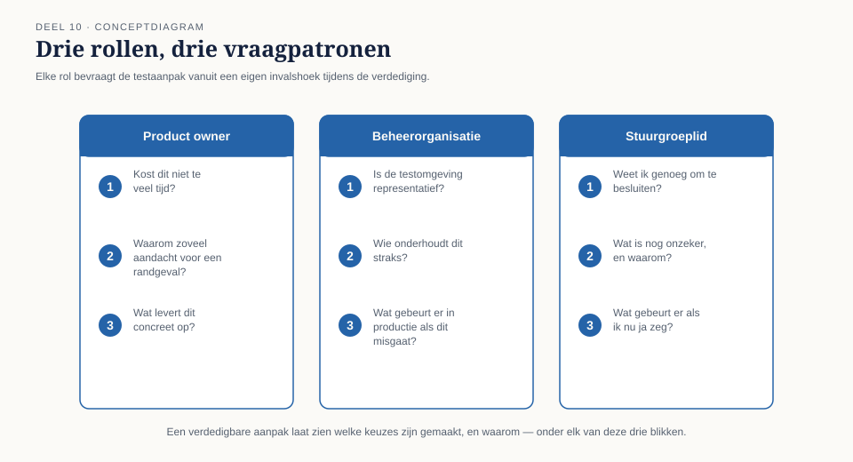

Cursus Testen en Kwaliteitsborging · Niveau 1 (ISTQB CTFL) · Deel 10 van 30
Examentraining & de capstone
Dit laatste deel van niveau 1 bestaat uit twee onderdelen: een oefenexamen in de stijl van het echte CTFL-examen, en een capstone waarin u een volledige, risicogebaseerde testaanpak voor de deeltijdverwerking van WGP 2.0 opstelt en verdedigt tegenover drie kritische rollen uit de organisatie van Meridiaan Pensioen. Er komt in dit deel geen nieuw instrument bij — u gebruikt alles wat u in deel 1 tot en met 9 heeft opgebouwd.
5secties
±3uoefenexamen + capstone
6controlevragen
8bevindingen verdedigd
Positionering. Deze cursus is een voorbereiding op het examen ISTQB Certified Tester Foundation Level (CTFL) en uitdrukkelijk geen vervanging van het officiële ISTQB-syllabusmateriaal, te raadplegen via istqb.org. Het oefenexamen in dit deel volgt de vorm en de blauwdruk van het officiële examen naar beste weten, maar het aantal vragen, de tijdsduur en de exameneisen worden door ISTQB vastgesteld en kunnen wijzigen; raadpleeg altijd istqb.org voor de actuele stand voordat u zich aanmeldt.
Niveau 1: ➊ Waarom getest wordt → ➋ Het testproces → ➌ Testen in de levenscyclus → ➍ Statisch testen → ➎ Black-boxtechnieken → ➏ White-box en ervaringsgebaseerd testen → ➐ Risicogebaseerd testen → ➑ Uitvoeren en bevindingen → ➒ Rapporteren en gereedschap → ➓ Examentraining + capstone (hier)
01
Terug naar het begin
⏱ 8 min
Na dit deel kunt u de examenstof van CTFL v4.0 in samenhang toepassen op een gegeven scenario, en een volledige, risicogebaseerde testaanpak opstellen voor een afgebakend deelsysteem. U kunt een besluitvormend testrapport schrijven dat aantoont welke van de acht bevindingen T1–T8 door uw eigen aanpak worden voorkomen, uw testaanpak mondeling verdedigen tegen kritische vragen vanuit drie verschillende rollen, en onderscheid maken tussen een verdedigbare, beargumenteerde keuze en een schijnbaar volledige maar oppervlakkige aanpak.
In deel 1 kreeg u de vraag: "Zou jij dit systeem live laten gaan?" De meeste groepen zeiden aanvankelijk ja, of ja-met-een-slag-om-de-arm. Aan het eind van dat dagdeel was dat gekanteld.
Tien delen later is de vraag niet meer of u "ja" of "nee" zou zeggen. De vraag is of u kunt uitleggen, met een volledige, verdedigbare aanpak, wélke informatie een ander in staat stelt die vraag zelf verantwoord te beantwoorden. Dat is precies de rolgrens waarmee deel 1 begon — nu niet meer als uitgangspunt om te leren, maar als vaardigheid om te tonen.
02
Ochtend: examentraining
⏱ 30 min
Een oefenexamen van 40 vragen, opgebouwd in de stijl van het CTFL v4.0-examen: 65% als slaggrens, een mix van K1-, K2- en K3-vragen, met scenario's die vergelijkbaar zijn met — maar niet identiek aan — de oefentoetsen uit deel 1 tot en met 9. De vragenbank is eigen werk van Ductus, geschreven in examenstijl, en bevat geen letterlijke examenvragen.
Examenstrategie
Lees de vraag twee keer vóór u de antwoordopties bekijkt — veel foutieve antwoorden ontstaan doordat een optie plausibel klinkt vóórdat de vraag scherp is gelezen.
Elimineer eerst de zeker foute opties. Bij vier opties is dit vaak sneller dan direct het juiste antwoord zoeken.
Let op signaalwoorden: "altijd", "nooit", "uitsluitend" zijn vaak (niet altijd) een teken van een onjuiste optie; deze cursus heeft consequent laten zien dat de werkelijkheid zelden absoluut is.
De meest voorkomende examenfouten uit deze cursus, ter herinnering: principe 1 versus 7 (deel 1), testconditie versus testgeval (deel 2), confirmatie versus regressie (deel 3), walkthrough versus technische review (deel 4), ontbrekende ongeldige equivalentieklassen (deel 5), statement- versus beslissingsdekking (deel 6), productrisico versus projectrisico (deel 7), ernst versus prioriteit (deel 8), entry- versus exitcriterium (deel 9).
Na het oefenexamen worden de vragen klassikaal doorgenomen, met nadruk op de vragen die het vaakst fout werden beantwoord — een goed moment om terug te bladeren naar het specifieke deel waar de stof vandaan komt.
Controlevragen
Uit Werkboek deel 10, Deel A — Oefenexamen, vraag 3, 15 en 20
1Welk principe wordt geschonden wanneer een testset twee jaar lang dagelijks draait zonder ooit een afwijking te vinden? A. Uitputtend testen is onmogelijk. B. Afwijkingen clusteren. C. Tests slijten. D. Vroeg testen bespaart tijd.Toon antwoord
C. Tests slijten: dezelfde tests herhaaldelijk uitvoeren levert op den duur geen nieuwe informatie meer op — alles wat die tests kunnen vinden, is gevonden.
2Wat vindt statische analyse doorgaans niet? A. Ongebruikte variabelen. B. Structurele inconsistenties in een beslistabel. C. Een betekenisverschil tussen twee grammaticaal correcte, elkaar tegensprekende zinnen. D. Onbereikbare code.Toon antwoord
C. Statische analyse vindt structurele patronen (ongebruikte variabelen, onbereikbare code, inconsistenties in een tabel), maar geen betekenisverschil tussen twee taalkundig correcte zinnen die elkaar tegenspreken — precies het WGP 2.0-probleem uit deel 1 en deel 4, dat alleen een menselijke review kan vinden.
3Wat impliceert 100% beslissingsdekking? A. 100% statementdekking, maar niet andersom. B. Niets over statementdekking. C. Dat alle combinaties van voorwaarden zijn getest. D. Dat het systeem foutloos is.Toon antwoord
A. 100% beslissingsdekking impliceert altijd 100% statementdekking, maar niet omgekeerd — een if-statement met alleen de "waar"-tak getest telt al voor statementdekking, ook als de "onwaar"-tak nooit is doorlopen.
03
Middag: de capstone
⏱ 30 min
U krijgt een deelsysteem van WGP 2.0 toegewezen: de verwerking van deeltijdwijzigingen, inclusief de doorzending naar de kernadministratie. Dit deelsysteem is bewust gekozen omdat het meerdere bevindingen uit T1–T8 raakt: het bevat een datumgrens (T6), een ketenoverdracht (T7, T5) en was onderdeel van de oorspronkelijke onderdekking (T2).
Uw taak, individueel voor te bereiden en in een groep van drie te verdedigen: een testaanpak (maximaal twee A4) met een korte productrisicoanalyse (deel 7) met minstens vier risico-items, per risico-item gekozen technieken (deel 5 en 6) en diepgang, entry- en exitcriteria (deel 9), en expliciete eisen aan testomgeving en testdata (deel 8); een testrapport (maximaal één A4) volgens de structuur uit deel 9; en een bevindingenmatrix: voor elk van de acht bevindingen T1–T8, een expliciete zin die aantoont hoe uw aanpak deze zou hebben voorkomen of tijdig aan het licht gebracht — of een eerlijke erkenning waarom dat bewust niet het geval is.
Elke groep verdedigt zijn aanpak in twintig minuten voor drie rollen: Marijke de Groot (product owner) bevraagt vanuit "kost dit niet te veel tijd voor wat het oplevert?"; Astrid Poelman (beheerorganisatie) vanuit "is de testomgeving representatief, en wie onderhoudt dit straks?"; Rob Hendriks (stuurgroeplid) vanuit "als ik dit rapport krijg, weet ik dan genoeg om een verantwoord besluit te nemen?"

Figuur 10-1 — Drie rolkaarten met, per rol, drie voorbeeldvragen die de rol waarschijnlijk zal stellen.
Wat wordt beoordeeld: niet of de aanpak "compleet" is in de zin van maximale diepgang overal, wél of elke keuze verdedigbaar is vanuit risico, niet vanuit gewoonte; of de bevindingenmatrix eerlijk is — een aanpak die beweert alle acht bevindingen te voorkomen zonder dat overtuigend te kunnen uitleggen, scoort lager dan een aanpak die eerlijk erkent twee bevindingen bewust minder diep af te dekken, met een goede reden; en of de verdediging standhoudt onder kritische vragen.
Kernzin
Een aanpak die alles even grondig wil doen, heeft geen keuzes gemaakt. Een verdedigbare aanpak laat zien wélke keuzes zijn gemaakt, en waarom.
Controlevragen
Uit Werkboek deel 10, Deel A — Oefenexamen, vraag 36, 39 en 40
1Een testgeval verwijst niet naar enige eis. Wat is het belangrijkste gevolg? A. Het testgeval is per definitie overbodig. B. Niet vast te stellen is welk risico dit testgeval afdekt, en dus ook niet wat onafgedekt blijft. C. Het testgeval kan niet worden uitgevoerd. D. Het telt niet mee in het dekkingspercentage.Toon antwoord
B. Zonder verwijzing naar een eis is niet vast te stellen welk risico een testgeval afdekt — en dus evenmin wat onafgedekt blijft. Dit is bevinding T1, die precies de bevindingenmatrix van de capstone moet voorkomen.
2Wat is het gemeenschappelijke kenmerk van de acht bevindingen T1–T8 uit deze cursus? A. Ze ontstonden allemaal door onvoldoende testgereedschap. B. Ze ontstonden doordat kennis die er al was, nooit een vorm kreeg die het testproces kon sturen. C. Ze werden allemaal door dezelfde persoon veroorzaakt. D. Ze hadden allemaal met automatisering te maken.Toon antwoord
B. Geen van de acht bevindingen ontstond uit onkunde — bij Meridiaan wist steeds wel iemand iets dat, als het een vorm had gekregen die het testproces kon sturen, de bevinding had voorkomen. Precies dat inzicht moet de bevindingenmatrix van de capstone laten zien.
3Wie is verantwoordelijk voor het uiteindelijke besluit om een systeem in productie te nemen? A. De testcoördinator, op basis van het testrapport. B. De ontwikkelaar die de laatste afwijking herstelde. C. Degene die het risico draagt en daartoe is gemandateerd. D. De beheerorganisatie.Toon antwoord
C. De rolgrens uit deel 1 blijft onverkort gelden: de tester levert informatie en een aanbeveling, maar het besluit ligt bij wie het risico draagt en daartoe gemandateerd is — bij de capstone gespeeld door Rob Hendriks.
04
Waarom dit deelsysteem
⏱ 10 min
Deeltijdwijzigingen zijn bewust een afgebakend, behapbaar deelsysteem — groot genoeg om alle acht bevindingen te kunnen raken, klein genoeg om in de beschikbare tijd volledig doordacht te worden. Deze beperking is zelf een toepassing van de les uit deel 7: een productrisicoanalyse voor een heel systeem in twintig minuten is oppervlakkig; een grondige analyse van een afgebakend, risicovol deel is waardevoller dan een oppervlakkige van het geheel.
Voor deze capstone is er geen apart TMAP-blok — in plaats daarvan een expliciete keuzevraag die in de verdediging aan bod mag komen: zou u deze testaanpak formuleren als een klassiek testplan-document, of als een set bouwstenen die het team gaandeweg invult? Beide zijn verdedigbaar; wat telt is niet welke stijl u kiest, maar of de argumentatie voor die keuze standhoudt.
05
Naar niveau 2
⏱ 12 min
Wie hier slaagt, heeft niveau 1 volledig doorlopen: van "waarom testen we" tot een zelfstandig verdedigbare, risicogebaseerde testaanpak. Lees als afsluiting uw allereerste aantekeningen uit deel 1 nog eens terug — uw antwoord op "zou jij dit systeem live laten gaan?" en uw herschreven conclusie. Wat zou u nu, na tien delen, anders doen dan toen? Welke van de acht bevindingen T1–T8 herkent u het sterkst in uw eigen werkomgeving? Welke vaardigheid uit niveau 1 wilt u als eerste toepassen zodra u terug bent op uw werk?
Niveau 2 (Professional) bouwt dit uit naar programmaschaal: het Programma Mutatieplatform, met meerdere teams, ketenpartners en een releasetempo dat niet langer toestaat om, zoals in deze capstone, twee dagdelen aan één deelsysteem te besteden. De discipline die u hier heeft geoefend — risico eerst, dan pas techniek en diepgang — blijft het fundament.
Verder naar niveau 2
Niveau 1 is afgerond: alle acht bevindingen T1–T8 uit de post-mortem van WGP 2.0 zijn in de capstone in samenhang verdedigd. Niveau 2 speelt zich af binnen het Programma Mutatieplatform, achttien maanden na de mislukte livegang van WGP 2.0: vier bestaande mutatiekanalen worden door één keten vervangen, met vijf teams en twee externe partijen tegelijk. Iris Verweij is aangesteld als quality lead en kiest daar bewust voor de TMAP-gedachte — kwaliteit als teambrede verantwoordelijkheid via het VOICE-model — naast de ISTQB-precisie die u in dit niveau heeft opgebouwd.